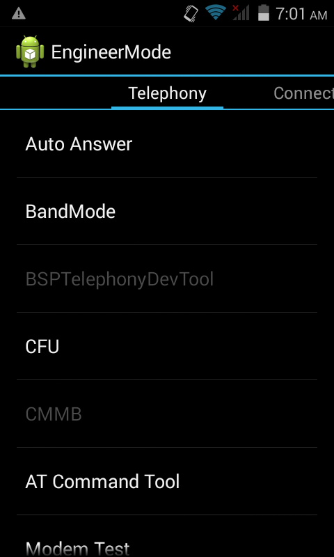
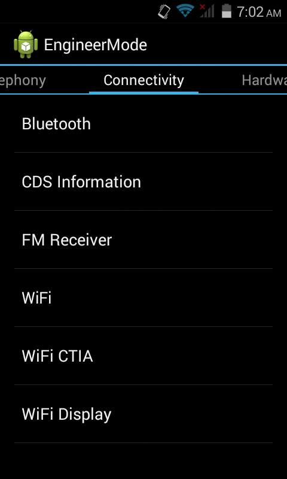
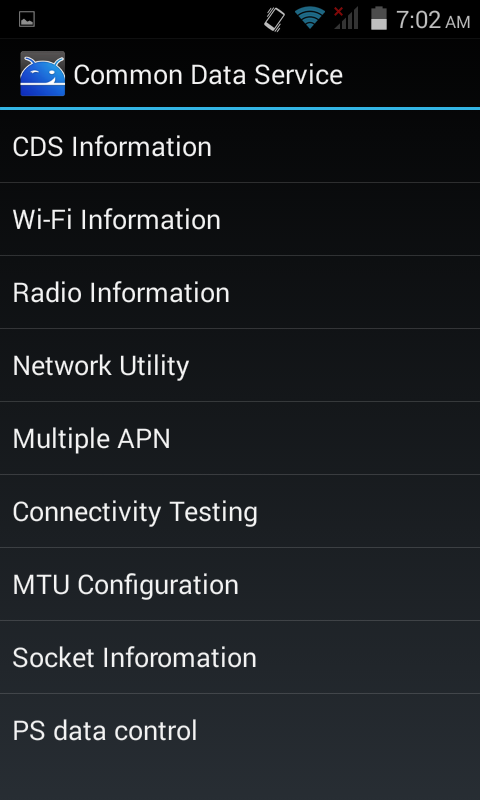
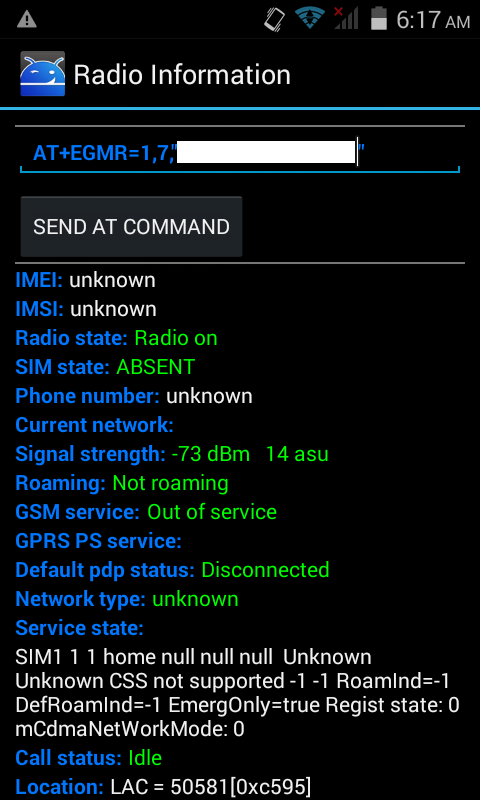
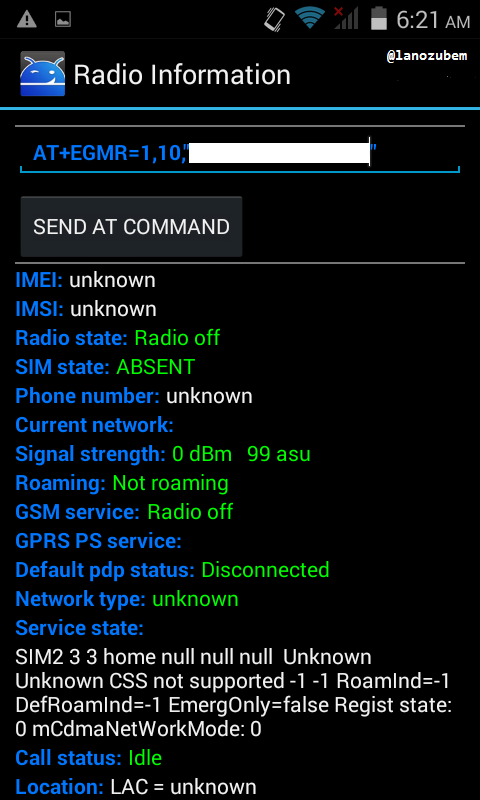

Blu, Imei Inválido Resolvido

Se você realizou procedimentos como hard reset, reinstalação de stock rom e se deparou com seu dispositivo não reconhecendo os cartões Sims, saiba que não foi o único a passar por isso. Aqui você verá de forma rápida e prática como resolver essa dor de cabeça sem a nescessidade de um médico, por isso, siga por sua conta e risco.
Para esse tutorial você vai precisar apenas deste app MTK engineering.
Antes de tudo você deve desligar o aparelho e remover a bateria para anotar em um lugar de fácil acesso o imei 1 e o imei 2 pois precisaremos mais tarde desta numeração para poder recupera-los.
-
Com o app aberto você irá clicar em "MTK settings".
-

Feito o passo anterior clique em "connectivity".
-

Agora escolha "CDS Information".
-

Escolha também "Radio Information".
-
Clique em "Phone 1" para inserir o Imei 1.
-

Você deve digitar AT +EGMR=1,7,"Informe o IMEI 1" e clique em "SEND AT COMMAND".
-

Você deve digitar AT +EGMR=1,10,"Informe o IMEI 2" e clique em "SEND AT COMMAND".
Agora volte e escolha o "Phone 2".
Feito os passos acima, reinicie o aparelho, após isso o mesmo estará com todos os cartões sims em pleno funcionamento.
Então se obteve problemas com alguns dos passos listados acima, fique tranquilo a deixar seus comentários logo abaixo.